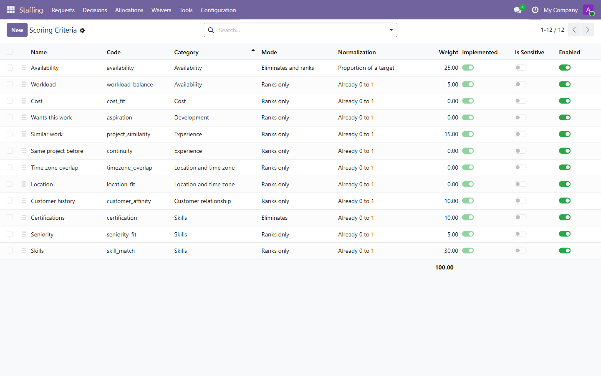
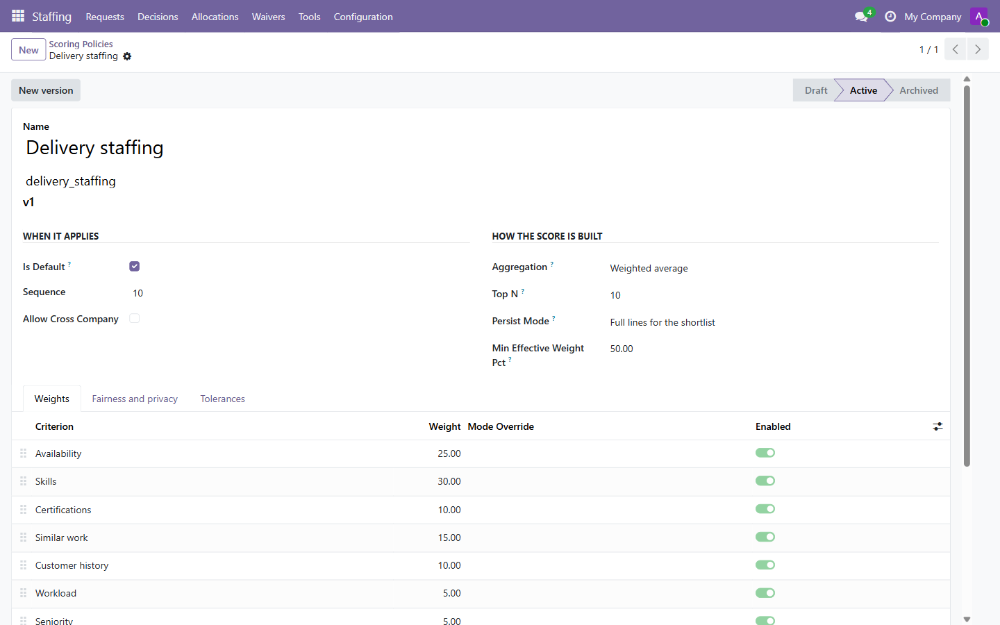
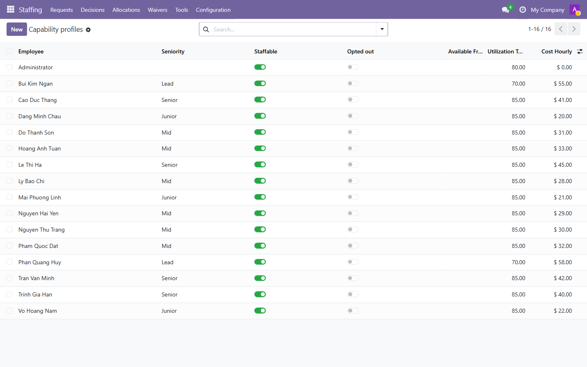
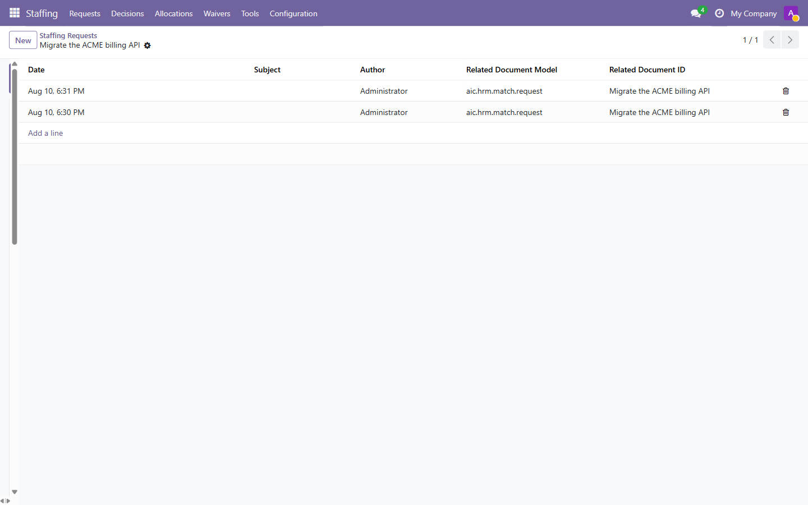
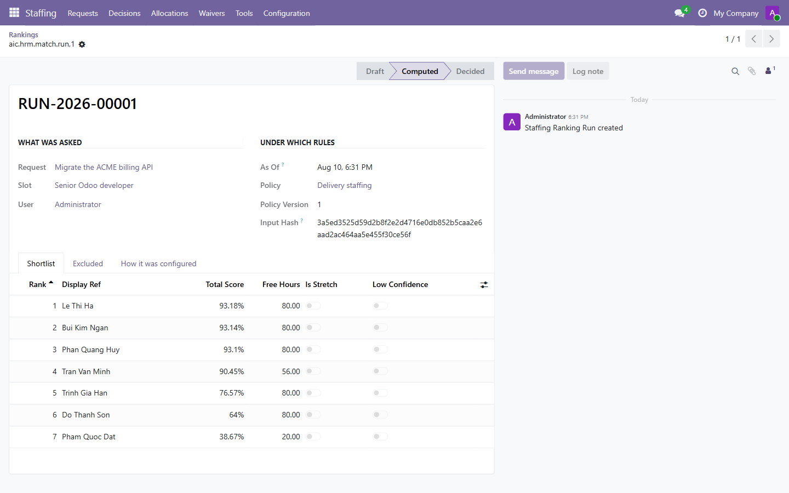
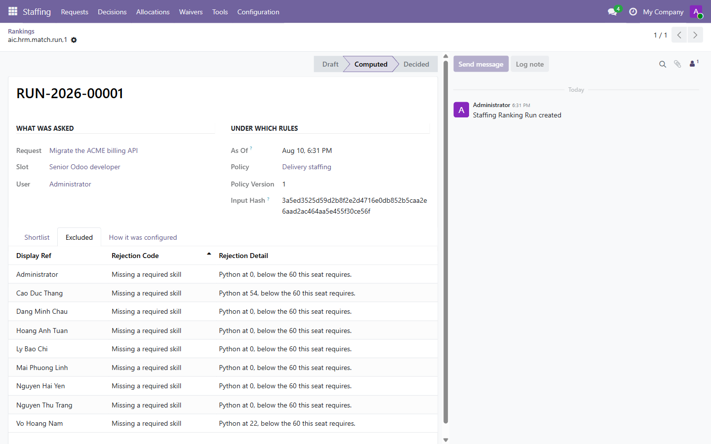
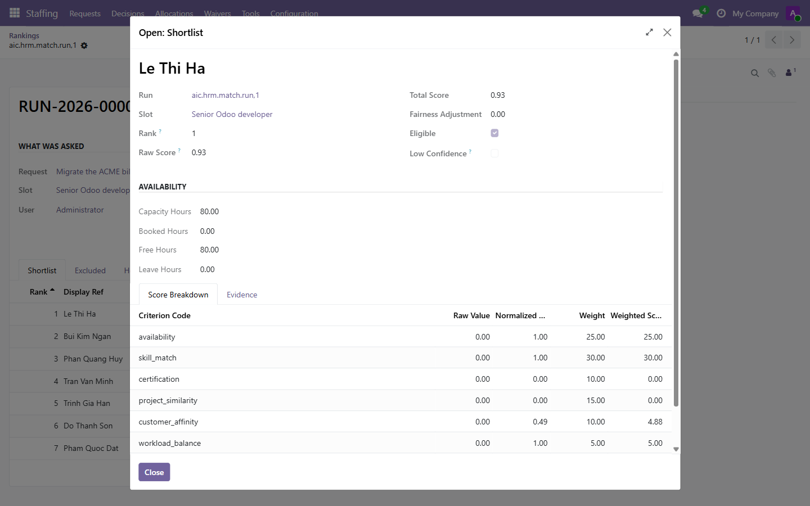

Từ danh mục tiêu chí đến quyết định bố trí nhân sự, theo đúng thứ tự dữ liệu hình thành.
Tài liệu này đi theo trật tự trưởng thành của dữ liệu: mỗi bước chỉ dùng những gì bước trước đã tạo ra. Đọc từ trên xuống là dựng được một hệ thống chạy thật.
Mọi ảnh chụp dưới đây lấy từ một hệ thống đang chạy với dữ liệu thật — 16 nhân sự, 28 dòng kỹ năng, 10 dòng lịch sử dự án, 3 yêu cầu đã xếp hạng. Không có ảnh dựng, không có số bịa.
Trước khi chấm được ai, hệ thống phải biết nó chấm theo cái gì.
Module ship sẵn 12 tiêu chí, 7 cái bật mặc định. Đây là danh mục sản phẩm — từ vựng chung của cả hệ thống — chứ không phải dữ liệu của bạn. Bạn không cần tạo gì ở bước này.

Chân bảng cộng tổng trọng số ra 100.00. Con số đó không trang trí: nếu tổng lệch, bảng xếp hạng vẫn chạy nhưng ý nghĩa của từng trọng số không còn như bạn nghĩ.
Cùng một bộ tiêu chí, mỗi công ty cân nặng nhẹ khác nhau.

Chú ý thanh trạng thái Draft → Active → Archived và nút New version. Chính sách đang hoạt động không sửa được. Muốn đổi trọng số, bạn tạo phiên bản mới.
Nguồn cung: hệ thống biết gì về từng người.
Hồ sơ được tạo tự động cho mỗi nhân sự khi lần đầu được đưa vào một lượt xếp hạng — bạn không phải tạo tay. Việc của bạn là điền những gì ảnh hưởng tới kết quả.

| Trường | Ảnh hưởng tới |
|---|---|
| Seniority | tiêu chí seniority_fit — đạt cấp yêu cầu thì đủ điểm, vượt cấp không được cộng thêm |
| Utilization target | tiêu chí workload_balance — so với mục tiêu của chính người đó, không so giữa người này với người kia |
| Cost hourly | tiêu chí cost_fit; chỉ quản trị viên xem được |
| Available from | điều kiện loại: bắt đầu sau ngày công việc khởi động thì bị loại |
Nhu cầu: cần ai, trong khoảng thời gian nào, làm được gì.

Trên mỗi slot, khai kỹ năng cần và mức tối thiểu. Cột Requirement quyết định hành vi:
| Requirement | Thiếu thì sao |
|---|---|
mandatory | Loại khỏi danh sách. Việc không làm được nếu thiếu kỹ năng này. |
important | Trừ điểm theo mức thiếu, vẫn nằm trong danh sách. |
nice_to_have | Có thì cộng, không có thì thôi. |
Bấm Re-rank trên yêu cầu. Kết quả là một bản ghi lưu vĩnh viễn, không phải màn hình tạm.

Hai trường ở khối Under which rules là thứ làm cho kết quả giải trình được về sau:
| Trường | Ý nghĩa |
|---|---|
| As Of | Thời điểm đóng băng. Mọi phép suy giảm theo thời gian và mọi kiểm tra hiệu lực đều đo theo mốc này, không theo hiện tại — nên mở lại lượt chạy này tháng sau vẫn thấy đúng những điểm số cũ. |
| Policy Version | Phiên bản chính sách đã dùng. Trọng số có đổi về sau cũng không viết lại lịch sử. |
| Input Hash | Dấu vân tay dữ liệu đầu vào. Hai lượt chạy cùng dấu vân tay bắt buộc cho ra cùng thứ tự. |
Bấm Re-rank lần nữa sẽ tạo lượt chạy mới chứ không ghi đè lượt cũ.
Đây là phần khác biệt nhất so với việc chọn người theo trí nhớ.

Đọc tab này còn để phát hiện cấu hình sai. Một điều kiện loại gần hết mọi người thường là một điều kiện đặt sai, chứ không phải một đội ngũ yếu.
Bấm vào một ứng viên để xem con số đến từ đâu.

Khối Availability hiển thị phép tính đầy đủ để bạn tự kiểm: Capacity − Leave − Booked = Free. Người có 80 giờ công, không nghỉ, chưa bị đặt lịch thì còn 80 giờ.
Tab Evidence bên cạnh liệt kê bằng chứng của từng tiêu chí — bao nhiêu lần làm cho khách này, kỹ năng ở mức nào — và mỗi dòng mở được đúng bản ghi đứng sau nó.